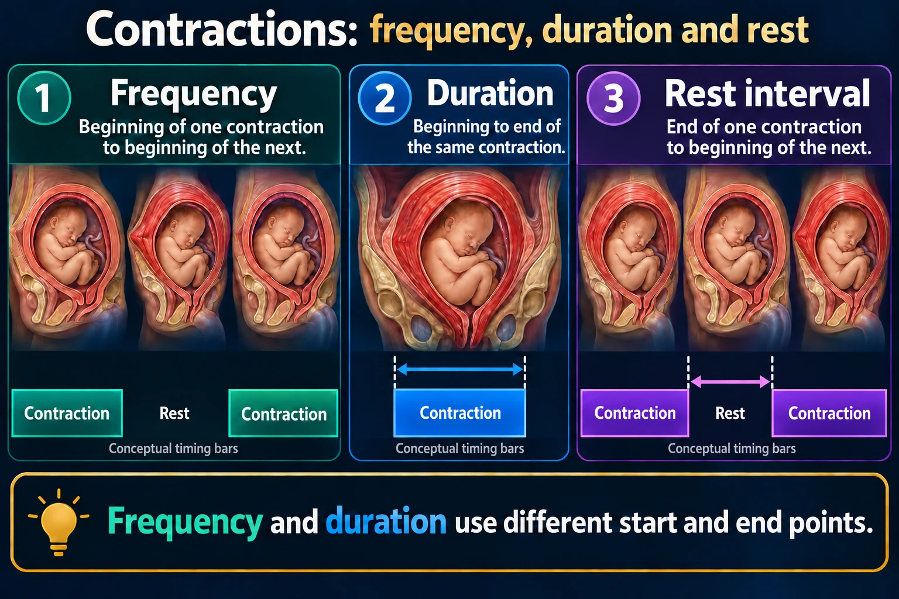

ABSN STUDY HUB · VISUAL STUDY CARD
Reading a contraction
Reading a contraction

The picture above is original Study Hub artwork. Existing Simple Nursing material remains in the linked course/module; no exact additional handout match was identified for this companion card in the current preview catalog.
Course labels and notes from the original graphic, arranged into readable sections. The illustration is schematic.
Course overview
LABOR • CONTRACTION PATTERN
- Reading a contraction: Three measurements. Three different questions.
The three measurements
- 1. Duration: Start of one contraction to its end. Usually recorded in seconds.
- 2. Frequency: Start of one contraction to the start of the next. Usually recorded in minutes.
- 3. Intensity: Strength assessed by palpation or an appropriate pressure measurement.
💡 External monitor height does not reliably measure contraction strength.
On the tracing
Contractions drawn along a line of Time →
- DURATION: across one contraction
- FREQUENCY: onset → next onset
- INTENSITY = how strong
Credit
- ABSN STUDY HUB • Visual study aid • Sources and readable notes in companion guide